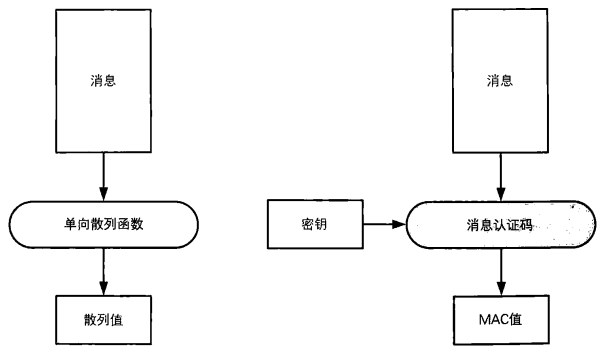
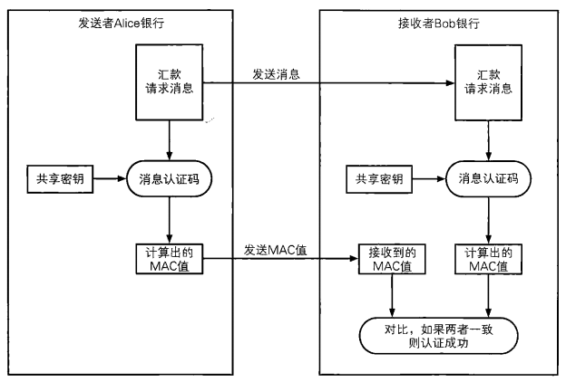
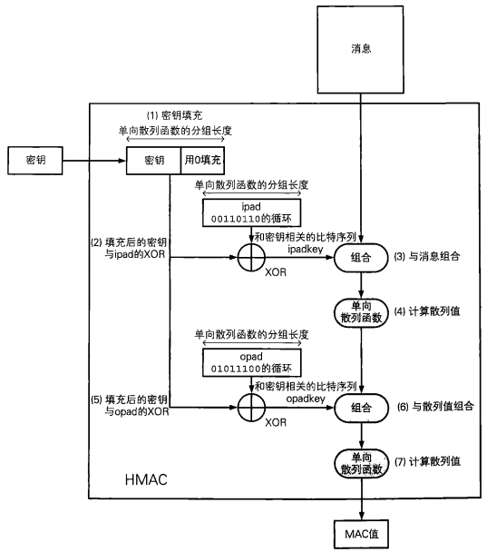

6.1 什么是消息认证码
Alice 和 Bob 的故事
像以前一样，我们还是从一个Alice和Bob的故事开始讲起。不过，这一次Alice和Bob分别是两家银行，Alice银行通过网络向Bob银行发送了一条汇款请求，Bob银行收到的请求内容是：
从账户A-5374 向账户B-6671汇款1000万元
当然，Bob银行所收到的汇款请求内容必须与Alice银行所发送的内容是完全一致的。如果主动攻击者Mallory在中途将Alice银行发送的汇款请求进行了篡改，那么Bob银行就必须要能够识别出这种篡改，否则如果Mallory将收款账户改成了自己的账户，那么1000万元就会被盗走。
话说回来，这条汇款请求到底是不是Alice银行发送的呢？有可能Alice银行根本就没有发送过汇款请求，而是由主动攻击者Mallory伪装成Alice银行发送的。如果汇款请求不是来自Alice银行，那么就绝对不能执行汇款。
现在我们需要关注的问题是汇款请求（消息）的 “完整性” 和 “认证” 这两个性质。
消息的完整性（integrity), 指的是“消息没有被篡改”这一性质，完整性也叫一致性。如果能够确认汇款请求的内容与Alice银行所发出的内容完全一致，就相当于是确认了消息的完整性，也就意味着消息没有被篡改。
消息的认证（authentication）指的是“消息来自正确的发送者”这一性质。如果能够确认汇款请求确实来自Alice银行，就相当于对消息进行了认证，也就意味着消息不是其他人伪装成发送者所发出的。
通过使用本章中要介绍的消息认证码，我们就可以同时识别出篡改和伪装，也就是既可以确认消息的完整性，也可以进行认证。
什么是消息认证码
消息认证码（message authentication code）是一种确认完整性并进行认证的技术，取三个单词的首字母，简称为MAC。
消息认证码的输入包括任意长度的消息和一个发送者与接收者之间共享的密钥，它可以输出固定长度的数据，这个数据称为MAC值。
根据任意长度的消息输出固定长度的数据，这一点和单向散列函数很类似。但是单向散列函数中计算散列值时不需要密钥，而消息认证码中则需要使用发送者与接收者之间共享的密钥。
要计算MAC必须持有共享密钥，没有共享密钥的人就无法计算MAC值，消息认证码正是利用这一性质来完成认证的。此外，和单向散列函数的散列值一样，哪怕消息中发生1比特的变化，MAC值也会产生变化，消息认证码正是利用这一性质来确认完整性的。
消息认证码有很多种实现方法，大家可以暂且这样理解：消息认证码是一种与密钥相关联的单向散列函数。
单向散列函数与消息认证码的比较

6.2 消息认证码的使用步骤
我们还是以Alice银行和Bob银行的故事为例，来讲解一下消息认证码的使用步骤:

- 发送者Alice与接收者Bob事先共享密钥。
- 发送者Alice根据汇款请求消息计算MAC值（使用共享密钥）。
- 发送者Alice将汇款请求消息和MAC值两者发送给接收者Bob。
- 接收者Bob根据接收到的汇款请求消息计算MAC值（使用共享密钥）。
- 接收者Bob将自己计算的MAC值与从Alice处收到的MAC值进行对比。
- 如果两个MAC值一致，则接收者Bob就可以断定汇款请求的确来自Alice（认证成功）；如果不一致，则可以断定消息不是来自Alice（认证失败）。
6.3 HMAC
6.3.1 HMAC介绍
HMAC是一种使用单向散列函数来构造消息认证码的方法（RFC2104），其中HMAC的H就是Hash的意思。
HMAC中所使用的单向散列函数并不仅限于一种，任何高强度的单向散列函数都可以被用于HMAC,如果将来设计出新的单向散列函数，也同样可以使用。
使用SHA-I、MD5、RIPEMD-160所构造的HMAC，分别称为HMAC-SHA-1、HMAC-MD5和HMAC-RlPEMD。
**使用HMAC通过秘钥将消息生成消息认证码的内部实现**：
通过上述流程我们可以看出，最后得到的MAC值，一定是一个和输入的消息以及密钥都相关的长度固定的比特序列。
6.3.2 消息认证码的密钥配送问题
在消息认证码中，需要发送者和接收者之间共享密钥，而这个密钥不能被主动攻击者Mallory获取。如果这个密钥落入Mallory手中，则Mallory也可以计算出MAC值，从而就能够自由地进行篡改和伪装攻击，这样一来消息认证码就无法发挥作用了。
发送者和接收者需要共享密钥，这一点和我们介绍的对称加密很相似。实际上，对称加密的密钥配送问题在消息认证码中也同样会发生。
6.4 消息认证码无法解决的问题
假设发送者Alice要向接收者Bob发送消息，如果使用了消息认证码，接收者Bob就能够断定自己收到的消息与发送者Alice所发出的消息是一致的，这是因为消息中的MAC值只有用Alice和Bob之间共享的密钥才能够计算出来，即便主动攻击者Mallory篡改消息，或者伪装成Alice发送消息，Bob也能够识别出消息的篡改和伪装。
但是，消息认证码也不能解决所有的问题，例如“对第三方证明”和“防止否认”，这两个问题就无法通过消息认证码来解决。下面我们来逐一解释一下。
6.4.1 对第三方证明
假设Bob在接收了来自Alice的消息之后，想要向第三方验证者Victor证明这条消息的确是Alice发送的，但是用消息认证码无法进行这样的证明，这是为什么呢？
首先，Victor要校验MAC值，就需要知道Alice和Bob之间共享的密钥。
假设Bob相信Victor, 同意将密钥告诉Victor,即便如此，Victor也无法判断这条消息是由Alice发送的，因为Victor可以认为：“即使MAC值是正确的，发送这条消息的人也不一定是Alice，还有可能是Bob。”
能够计算出正确MAC值的人只有Alice和Bob，在他们两个人之间进行通信时，可以断定是对方计算了MAC值，这是因为共享这个密钥的双方之中，有一方就是自己。然而，对于第三方Victor、Alice或Bob却无法证明是对方计算了MAC值，而不是自己。
使用第7章中将要介绍的数字签名就可以实现对第三方的证明。
6.4.2 防止否认
假设Bob收到了包含MAC值的消息，这个MAC值是用Alice和Bob共享的密钥计算出来的，因此Bob能够判断这条消息的确来自Alice。
但是，上面我们讲过，Bob无法向验证者Victor证明这一点，也就是说，发送者Alice可以向Victor声称：“我没有向Bob发送过这条消息。”这样的行为就称为否认（repudiation）。
Alice可以说“这条消息是Bob自己编的吧”，“说不定Bob的密钥被主动攻击者Mallory给盗取了，我的密钥可是妥善保管着呢” 等。说白了，就是Alice和Bob吵起来了。
即便Bob拿MAC值来举证，Victor也无法判断Alice和Bob谁的主张才是正确的，也就是说，用消息认证码无法防止否认（nonrepudiatlon）。
6.5 总结
消息认证码是对消息进行认证并确认其完整性的技术。通过使用发送者和接收者之间共享的密钥，就可以识别出是否存在伪装和篡改行为。
消息认证码可以使用单向散列函数HMAC。
消息认证码中，由于发送者和接收者共享相同的密钥，因此会产生无法对第三方证明以及无法防止否认等问题。在下一章中，我们将介绍能够解决这些问题的数字签名。